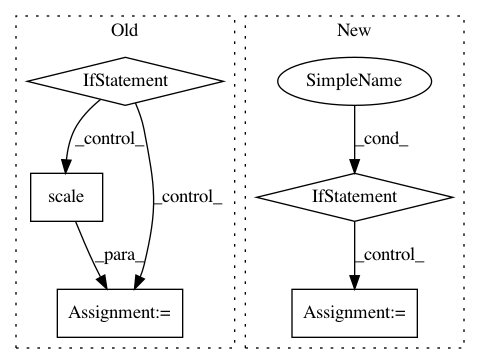

b18d16c13209a860f77a7dbad001cf472257cbb3,lib/matplotlib/figure.py,Figure,get_tightbbox,#Figure#Any#,2192
Before Change
if ax.get_visible():
bb.append(ax.get_tightbbox(renderer))
if len(bb) == 0:
return self.bbox_inches
_bbox = Bbox.union([b for b in bb if b.width != 0 or b.height != 0])
bbox_inches = TransformedBbox(_bbox,
Affine2D().scale(1. / self.dpi))
return bbox_inches
def init_layoutbox(self):
After Change
//figure.constrained_layout.use
):
Parameters
----------
figsize : 2-tuple of floats, default: :rc:`figure.figsize`
Figure dimension ``(width, height)`` in inches.
dpi : float, default: :rc:`figure.dpi`
Dots per inch.
facecolor : default: :rc:`figure.facecolor`
The figure patch facecolor.
edgecolor : default: :rc:`figure.edgecolor`
The figure patch edge color.
linewidth : float
The linewidth of the frame (i.e. the edge linewidth of the figure
In pattern: SUPERPATTERN
Frequency: 3
Non-data size: 5
Instances
Project Name: matplotlib/matplotlib
Commit Name: b18d16c13209a860f77a7dbad001cf472257cbb3
Time: 2018-07-09
Author: jklymak@gmail.com
File Name: lib/matplotlib/figure.py
Class Name: Figure
Method Name: get_tightbbox
Project Name: interactiveaudiolab/nussl
Commit Name: ea42472d2f70c07387d9bb074f93e85acd3c88a7
Time: 2020-03-22
Author: prem@u.northwestern.edu
File Name: nussl/separation/composite/ensemble_clustering.py
Class Name: EnsembleClustering
Method Name: extract_features
Project Name: matplotlib/matplotlib
Commit Name: 01c41a0b7db17e42ff1169773743073fc610d7fb
Time: 2020-07-28
Author: jklymak@gmail.com
File Name: lib/matplotlib/tight_bbox.py
Class Name:
Method Name: adjust_bbox